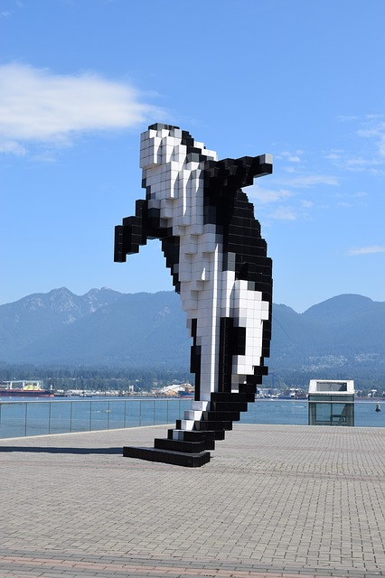
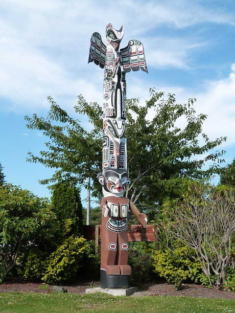
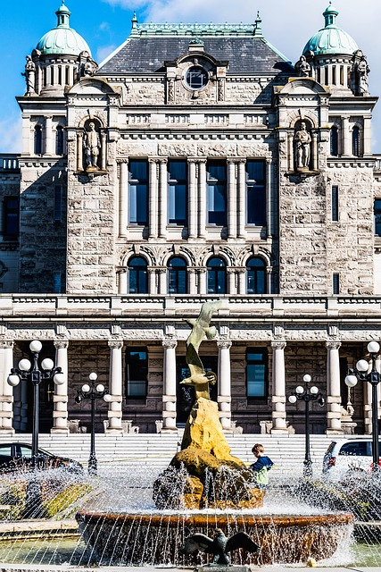
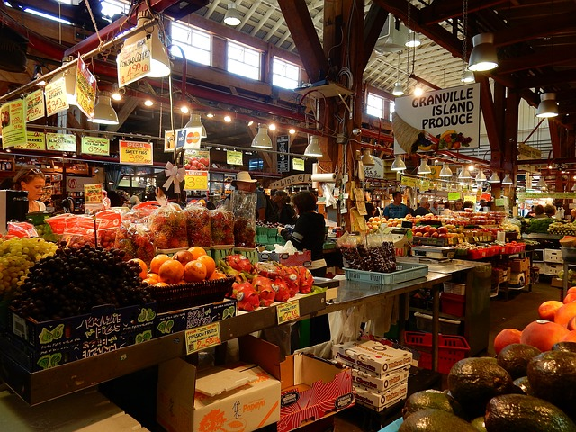
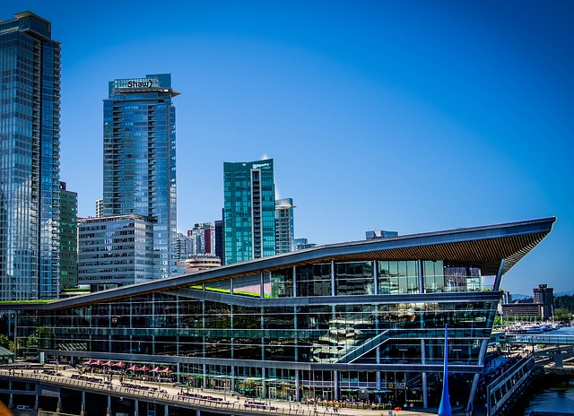

- 
- 
- 
- 
- 
Vancouver
VANCOUVER HISTORY
According to archeological records, there have been people living in the area around Vancouver from 10,000 years ago. Western Europeans, however, didn't arrive until the 18th century. George Vancouver, for whom the city eventually became named, explored the inner harbour around Burrard Inlet in 1792. Explorers didn't actually set foot on the land until 1808 when Simon Fraser of the North Wst Company travelled down the Fraser River to Point Grey.
In 1858, the Fraser Gold Rush brought many to the area, but it wasn't until 1862-63 that settlers built a sawmill and began logging operations. In 1867 Captain Edward Stamp moved his logging operation, Hastings Mill, to an area in what is now the foot of Dunlevy Street, thus began the nucleus of Vancouver. It was originally called Gastown for the tavern established by "Gassy" Jack Deighton in 1867.
The Canadian Pacific Railroad arrived in 1886, the same year the city was incorporated. Vancouver was central in providing supplies for the Klondike Gold Rush in 1898. Today, Vancouver is Canada's third largest metropolitan area with a diverse population, 52% of which English is a second language.
Information from Wikipedia's Vancouver entry
MUSEUMS AND HISTORICAL SITES
Museum of Anthropology. Northwest Coast First Nations art and culture along with more than 16,000 objects.
Vancouver Maritime Museum. Features St. Roch, the first vessel to circumnavigate North America. Also houses extensive galleries of model ships.
Roedde House Museum. One of the earlier houses built in Vancouver in 1888 and celebrates late Victorian family life.
Old Hastings Mill Store Museum. The oldest building in the city. Now a musuem housing native and pioneer artifacts.
THINGS TO DO
Vancouver has a wealth of opportunities for exploring art, indigenous culture, and the great outdoors. Here are some of the highlights intrepid adventurers will want to investigate.
Number one on everyone's list is Stanley Park. A 400-hectare West Coast rainforest, it has miles of trails, historical landmarks, totem poles, wildlife, and beaches, plus Canada's largest Aquarium.
The Dr. Sun Yat-Sen Classical Chinese Garden is another not-to-miss attraction and as it is in the heart of Vancouver's Chinatown, you'll want to spend some time exploring it and the area around it. It is an authentic Ming Dynasty style garden and the first of its kind outside of China.
Whale watching is something everyone is going to want to do. The best time to watch the migrating whales is between March and October. You are likely to encounter humpback, orcas, gray, and minke whales along with a variety of seabirds.
There are a number of festivals in the beginning of July as well. From the Bard on the Beach performances, Golden Spike Days Festival, Canada Day festivities, The TD International Jazz Festival, to the Indian Summer Festival all take place during the NAIDC week.
PLACES TO DINE
One of the delights of traveling is to try new cuisine. Vancouver, because of its global population and mix of indigenous, European, and Asian cultures, offers something for everyone in terms of eating experiences. One of the most unique experiences is the Top of Vancouver Revolving Restaurant which provides 360 degree views of the city.
Vancouver, sitting on the Pacific coast, naturally has many seafood specialties. The Salmon House has been serving fresh seafood for over 40 years. While pricey, you can't go wrong with any of the salmon dishes. If you like your salmon as sushi, check out Shizen Ya who serve only Ocean Wise fish and who are reasonably priced.